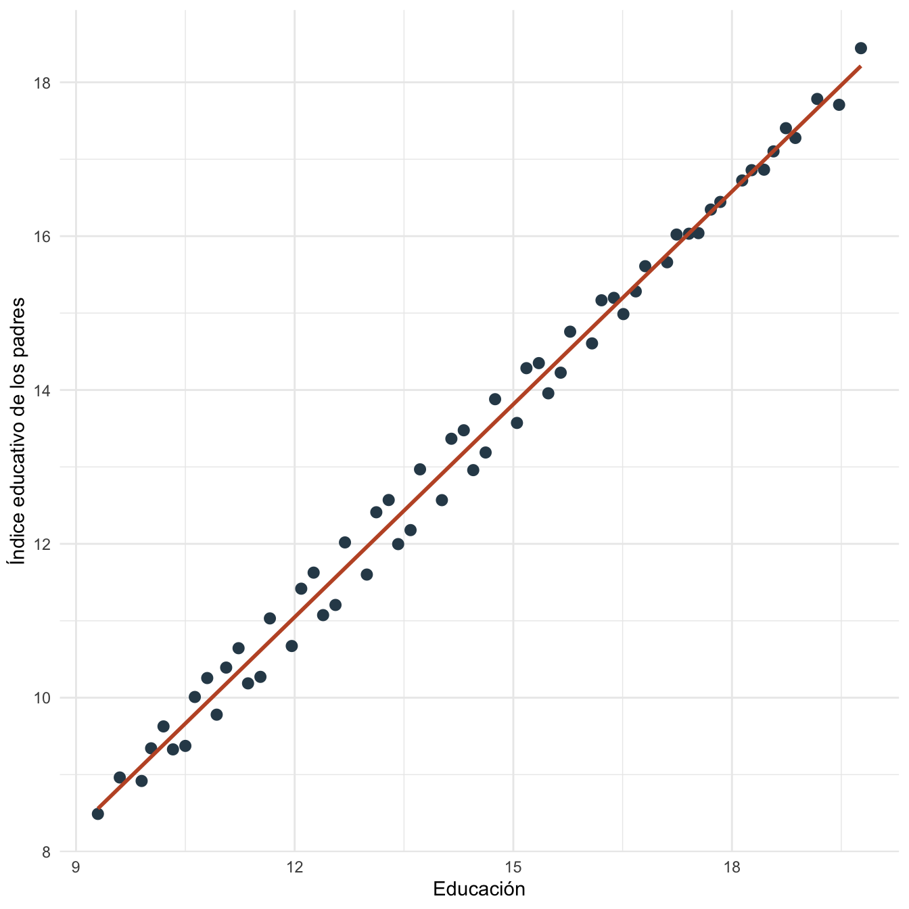
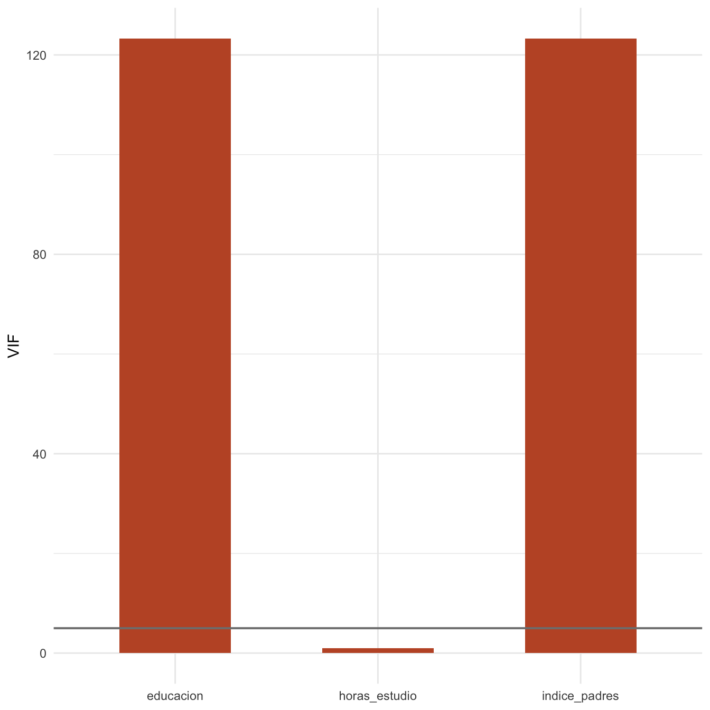

Capítulo 18 Multicolinealidad: práctica
18.1 Objetivos de la práctica
Al finalizar esta práctica podrás:
- Estimar un modelo con regresores altamente correlacionados.
- Calcular correlaciones, regresiones auxiliares y VIF.
- Comparar errores estándar entre un modelo con y sin regresores colineales.
- Reproducir el diagnóstico en R, Stata y Python.
18.2 Pregunta aplicada
Queremos explicar un puntaje académico con educación, horas de estudio e índice educativo de los padres. La pregunta aplicada es:
¿Qué ocurre con la precisión de los coeficientes cuando dos regresores contienen información muy parecida?
Estimaremos:
\[ \text{puntaje}_i =\beta_0+\beta_1\text{educacion}_i+\beta_2\text{indice\_padres}_i+\beta_3\text{horas\_estudio}_i+\epsilon_i. \]
18.3 Datos
La base se crea con una regla determinística. El índice educativo de los padres está construido para estar muy relacionado con educación, pero no de manera exacta.
| i | educacion | horas_estudio | indice_padres | ajuste | puntaje |
|---|---|---|---|---|---|
| 1 | 10.03 | 3.096 | 9.342 | 0.471 | 51.708 |
| 2 | 11.06 | 4.168 | 10.392 | 0.427 | 53.439 |
| 3 | 12.09 | 5.199 | 11.417 | -0.309 | 54.454 |
| 4 | 13.12 | 6.182 | 12.411 | -0.896 | 55.592 |
| 5 | 14.15 | 7.120 | 13.366 | -0.643 | 57.545 |
| 6 | 15.18 | 8.028 | 14.284 | 0.232 | 60.104 |
| 7 | 16.21 | 1.930 | 15.166 | 0.835 | 58.538 |
| 8 | 17.24 | 2.849 | 16.021 | 0.572 | 59.965 |
| 9 | 18.27 | 3.804 | 16.858 | -0.209 | 60.894 |
| 10 | 9.30 | 4.808 | 8.489 | -0.600 | 50.740 |
| 11 | 10.33 | 5.859 | 9.328 | -0.129 | 52.973 |
| 12 | 11.36 | 6.944 | 10.186 | 0.721 | 55.604 |

Figura 18.1: Relación entre educación e índice educativo de los padres
18.4 Estimación en R
Estimamos un modelo con los regresores colineales y calculamos diagnósticos.
| termino | estimacion | error_estandar | t | p_valor |
|---|---|---|---|---|
| (Intercept) | 37.7674 | 0.4544 | 83.1129 | 0.0000 |
| educacion | 1.2332 | 0.2952 | 4.1779 | 0.0001 |
| indice_padres | -0.0767 | 0.3188 | -0.2406 | 0.8107 |
| horas_estudio | 0.5634 | 0.0401 | 14.0587 | 0.0000 |
| regresor | VIF |
|---|---|
| educacion | 123.303 |
| indice_padres | 123.301 |
| horas_estudio | 1.007 |

Figura 18.2: Factores de inflación de varianza por regresor
Comparamos el error estándar de educación cuando incluimos y cuando excluimos el índice educativo de los padres.
| modelo | coeficiente_educacion | error_estandar_educacion |
|---|---|---|
| Con índice de padres | 1.2332 | 0.2952 |
| Sin índice de padres | 1.1624 | 0.0265 |
18.5 Interpretación
La correlación entre educación e índice educativo de los padres es 0.996. El VIF de educación es 123.30 y el VIF del índice de padres es 123.30.
El coeficiente de educación en el modelo completo es 1.233 y su error estándar es 0.295. En el modelo sin índice de padres, el error estándar de educación es 0.026.
La caída del error estándar al retirar un regresor no significa automáticamente que esa sea la especificación correcta. Si el índice de padres es relevante para la pregunta económica, eliminarlo puede cambiar la interpretación del coeficiente de educación.
18.6 Estimación en Stata
El mismo diagnóstico puede reproducirse en Stata:
clear
set obs 60
gen i = _n
gen educacion = 9 + mod(i, 10) + 0.03 * i
gen horas_estudio = 2 + mod(i, 7) + 0.2 * sin(i / 2)
gen indice_padres = 0.92 * educacion + 0.35 * sin(i / 3)
gen ajuste = 0.8 * sin(1.1 * i) - 0.25 * cos(i / 4)
gen puntaje = 38 + 1.15 * educacion + 0.55 * horas_estudio + ajuste
reg puntaje educacion indice_padres horas_estudio
estat vif
corr educacion indice_padres horas_estudio
reg puntaje educacion horas_estudioLos resultados esperados son los mismos coeficientes que Stata debe reproducir si usa la misma base y especificación:
| Término | Estimación aproximada | Error estándar aproximado |
|---|---|---|
| Constante | 37.767 | 0.454 |
| Educación | 1.233 | 0.295 |
| Índice de padres | -0.077 | 0.319 |
| Horas de estudio | 0.563 | 0.040 |
| \(R^2\) | 0.973 |
18.7 Estimación en Python y Google Colab
Para correr esta práctica en Google Colab, abre un cuaderno nuevo y ejecuta:
Luego reproduce la base, el modelo y los VIF:
import numpy as np
import pandas as pd
import statsmodels.api as sm
from statsmodels.stats.outliers_influence import variance_inflation_factor
i = np.arange(1, 61)
datos_multi = pd.DataFrame({"i": i})
datos_multi["educacion"] = 9 + (i % 10) + 0.03 * i
datos_multi["horas_estudio"] = 2 + (i % 7) + 0.2 * np.sin(i / 2)
datos_multi["indice_padres"] = 0.92 * datos_multi["educacion"] + 0.35 * np.sin(i / 3)
datos_multi["ajuste"] = 0.8 * np.sin(1.1 * i) - 0.25 * np.cos(i / 4)
datos_multi["puntaje"] = (
38 + 1.15 * datos_multi["educacion"] +
0.55 * datos_multi["horas_estudio"] +
datos_multi["ajuste"]
)
X = sm.add_constant(datos_multi[["educacion", "indice_padres", "horas_estudio"]])
y = datos_multi["puntaje"]
modelo = sm.OLS(y, X).fit()
print(modelo.summary())
X_sin_constante = datos_multi[["educacion", "indice_padres", "horas_estudio"]]
X_vif = sm.add_constant(X_sin_constante)
vif = pd.Series(
[variance_inflation_factor(X_vif.values, j)
for j in range(1, X_vif.shape[1])],
index=X_sin_constante.columns
)
print(vif)
print(datos_multi[["educacion", "indice_padres", "horas_estudio"]].corr())Los resultados esperados son los mismos coeficientes que Python debe reproducir si usa la misma base y especificación:
| Término | Estimación aproximada | Error estándar aproximado |
|---|---|---|
| Constante | 37.767 | 0.454 |
| Educación | 1.233 | 0.295 |
| Índice de padres | -0.077 | 0.319 |
| Horas de estudio | 0.563 | 0.040 |
| \(R^2\) | 0.973 |
18.8 Comparación R, Stata y Python
Los tres programas estiman el mismo modelo y ofrecen diagnósticos equivalentes. R calcula el VIF con regresiones auxiliares, Stata lo obtiene con estat vif, y Python lo calcula con variance_inflation_factor.
| Tarea | R | Stata | Python |
|---|---|---|---|
| Estimar modelo | lm() |
reg |
sm.OLS() |
| Correlaciones | cor() |
corr |
.corr() |
| VIF | regresiones auxiliares | estat vif |
variance_inflation_factor() |
| Comparar especificaciones | varios objetos lm() |
varias llamadas a reg |
varios modelos OLS |
18.9 Errores frecuentes en la práctica
- Eliminar variables solo para bajar el VIF. La decisión debe responder a la pregunta económica.
- Leer el VIF como prueba causal. El VIF mide dependencia entre regresores, no validez de identificación.
- Diagnosticar solo con correlaciones bivariadas. Las regresiones auxiliares capturan combinaciones de varios regresores.
- Confundir multicolinealidad con endogeneidad. La endogeneidad se estudia más adelante y afecta sesgo; la multicolinealidad afecta precisión.
18.10 Ejercicios computacionales
- Reduce el término
0.35 * sin(i / 3)enindice_padres. ¿Qué ocurre con los VIF? - Aumenta el tamaño de la muestra a 120 observaciones manteniendo la misma regla. ¿Cambian los errores estándar?
- Calcula manualmente el \(R^2\) auxiliar de educación sobre los demás regresores y verifica el VIF.
- Estima el modelo sin
indice_padres. ¿Cómo cambia la interpretación del coeficiente de educación? - Reproduce el diagnóstico en Python y compara la tabla de VIF con R.